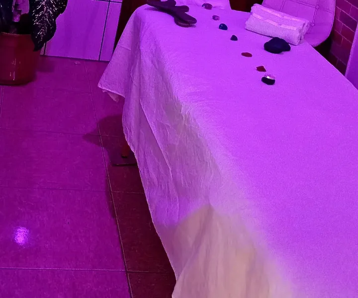
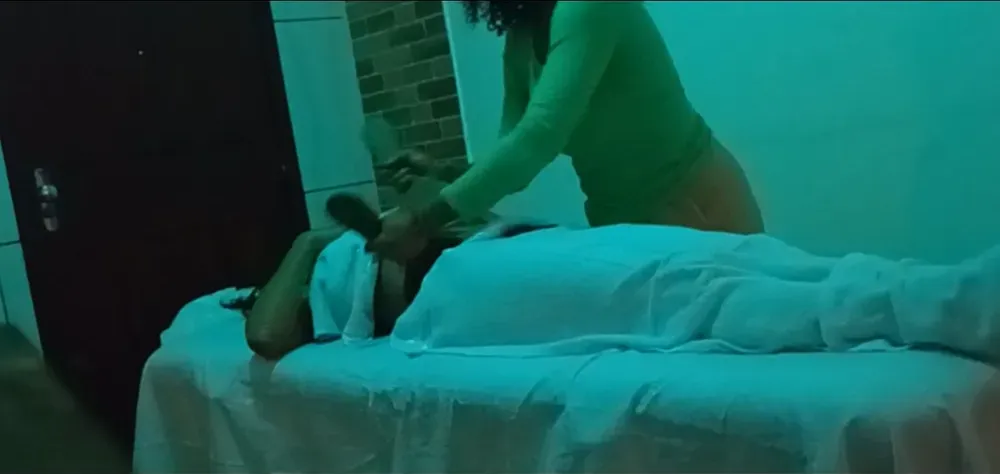
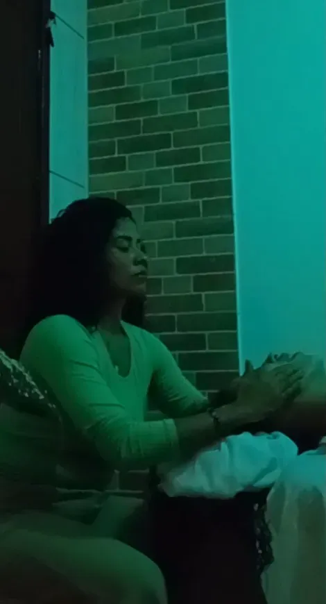
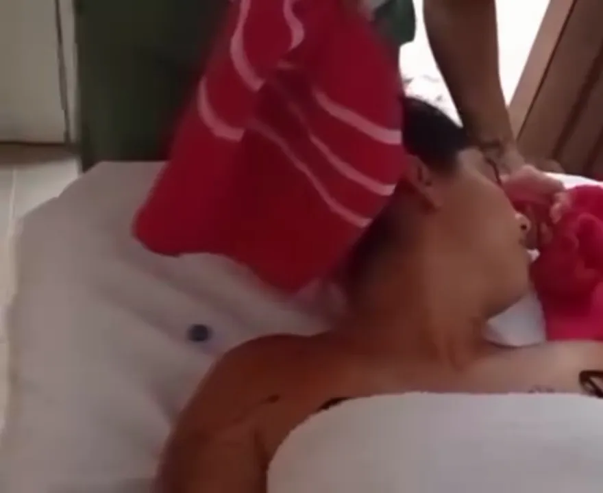

Massagem relaxante em Florianópolis: desligar de verdade, nem que seja por uma hora
Massagem relaxante em Florianópolis com pedras quentes, ritmo lento e luz baixa. Para quando a cabeça não para, o sono não descansa e o corpo inteiro parece pesado.
- Pedras quentes
- Ritmo lento
- Pode terminar com Reiki
- Hora marcada


O que é a massagem relaxante
A massagem relaxante é uma massagem de corpo inteiro com movimentos longos, contínuos e pressão média, feita para tirar o corpo do estado de alerta. O objetivo não é caçar um ponto de dor, e sim desacelerar a respiração, soltar a musculatura como um todo e acalmar a mente.
É a massagem mais procurada em Florianópolis, com mais de 400 buscas por mês somando "massagem relaxante" e "massagem relaxante Florianópolis". E faz sentido: a gente vive numa cidade linda, mas com trânsito, trabalho acumulado e pouco tempo para parar.
Na sessão da Karol, a relaxante vem acompanhada das pedras quentes, que levam o relaxamento mais fundo, e pode terminar com alguns minutos de Reiki para fechar em silêncio.

Massagem com pedras quentes: por que o calor relaxa tanto
As pedras são de basalto, uma rocha vulcânica escura e lisa que guarda calor por bastante tempo. Aquecidas, elas são posicionadas ao longo da coluna, nas palmas das mãos e nos pontos de tensão, e depois usadas como extensão das mãos da terapeuta, deslizando pelas costas e pernas.
O calor faz os vasos se dilatarem e o músculo aquecer por dentro. Um músculo aquecido cede com muito menos força, então a massagem fica profunda sem ser dolorida. É por isso que tanta gente cochila no meio da sessão.
- Temperatura sempre testada na pele antes
- Pedras posicionadas sobre a toalha quando a pele é sensível
- Combina com ventosa na mesma sessão
Pedras quentes não são indicadas para quem tem problemas de circulação importantes, diabetes com perda de sensibilidade, pele queimada de sol ou está grávida sem liberação. Avise sempre antes.

Quando a massagem relaxante é a escolha certa
Estresse acumulado
Semana pesada, cobrança no trabalho, cabeça que não desliga nem no fim de semana.
Ansiedade
Coração acelerado, respiração curta, pensamento que não para. O ritmo lento ajuda o corpo a sair do modo alerta.
Sono ruim
Quem dorme mal costuma dormir melhor na noite da massagem. Muita cliente relata isso.
Primeira massagem
Nunca fez? A relaxante é a porta de entrada perfeita, sem pressão forte.
Presente
Um dos presentes mais lembrados: uma hora de cuidado para quem nunca para.
Pós-viagem ou pós-evento
Depois de dias intensos, o corpo pede um reset.
Precisa de uma pausa?
Agende sua massagem relaxante pelo WhatsApp.
Massagem relaxante ou terapêutica?
| Relaxante | Terapêutica | |
|---|---|---|
| Objetivo | Desacelerar corpo e mente | Aliviar dor e tensão localizada |
| Pressão | Média e constante | Ajustada, pode ser firme nos pontos |
| Ritmo | Lento e contínuo | Varia conforme a região |
| Recursos | Pedras quentes, Reiki | Ventosa, instrumento, pedras |
| Ideal para | Estresse, ansiedade, sono | Costas, pescoço, tendinite, pós-treino |
Como é uma massagem relaxante com a Karol
Acolhimento
Uma conversa rápida sobre como você está e se há alguma contraindicação.
Ambiente
Luz baixa, toalhas, óleo e as pedras aquecendo.
Massagem
Movimentos longos em costas, pernas, pés, braços, mãos, pescoço e couro cabeludo.
Fechamento
Se quiser, alguns minutos de Reiki em silêncio antes de levantar.
Como prolongar o relaxamento
O ideal é não marcar nada muito agitado logo depois. Beba água, coma algo leve e, se puder, vá para casa sem pressa. Evite academia pesada no mesmo dia.
À noite, um banho morno e deitar um pouco mais cedo aproveitam o estado de relaxamento que a massagem deixa. Muitas clientes dizem que é a melhor noite de sono da semana.
Para quem vive sob estresse constante, uma massagem relaxante por mês funciona como manutenção. Em fases mais difíceis, a cada quinze dias.

Momentos de calma




O que o estresse faz com o seu corpo
Quando a gente vive sob pressão, o corpo entra num estado de alerta: a respiração fica curta, os ombros sobem, a mandíbula aperta, o sono fica leve. É um mecanismo de proteção que deveria ser temporário, mas na rotina corrida vira o normal.
A massagem relaxante trabalha exatamente o caminho de volta. O toque lento e contínuo, o calor das pedras e o silêncio sinalizam para o corpo que ele pode baixar a guarda. Por isso tanta gente sente sono, respira mais fundo e sai com a sensação de ter "desligado".
Não é luxo. É manutenção de quem precisa continuar funcionando bem.

Mitos e verdades sobre massagem relaxante
Massagem relaxante é fraca?
Mito. A pressão é média e constante, suficiente para soltar a musculatura sem dor.
Serve só para quem não tem dor?
Mito. Muitas dores leves são tensão acumulada, e a relaxante ajuda bastante.
Pedras quentes são só enfeite?
Mito. O calor aquece o músculo por dentro e aprofunda o relaxamento.
Pode dar sono depois?
Verdade. É comum sair com sono e dormir melhor à noite.
Homens também fazem?
Verdade. O estresse não escolhe gênero, e a massagem relaxante é para todos.
Precisa de muitas sessões?
Depende. Uma sessão já relaxa; em fases de estresse, repetir ajuda a manter.
Por quanto tempo fazer a massagem relaxante
A duração exata e o valor são combinados pelo WhatsApp, conforme o que você quer.
| Objetivo | Sessão indicada | O que inclui |
|---|---|---|
| Alívio rápido no meio da semana | Sessão mais curta, focada | Costas, pescoço e ombros |
| Relaxamento completo | Sessão de corpo inteiro | Costas, pernas, pés, braços, mãos e couro cabeludo |
| Experiência completa | Sessão estendida | Corpo inteiro + pedras quentes + Reiki |
| Presente especial | A combinar | A Karol monta a sessão conforme a pessoa |
Qual sessão é a sua?
Conte como você está e a Karol sugere o formato ideal.
Massagem relaxante para dormir melhor
Dormir mal é uma das queixas mais comuns de quem procura massagem relaxante em Florianópolis. O corpo tenso e a mente acelerada fazem o sono ficar raso: a pessoa dorme, mas acorda cansada.
Muitas clientes relatam que a noite depois da massagem é a melhor da semana. Para aproveitar isso, a dica é marcar a sessão no fim da tarde ou no começo da noite e ir direto para casa, sem telas e sem compromissos.
Insônia persistente merece avaliação médica. A massagem é uma aliada do sono, não um tratamento para distúrbios do sono.
O ambiente faz parte do relaxamento
Luz baixa, toalhas macias, óleo morno, pedras aquecidas e silêncio. Cada detalhe do ambiente é pensado para o corpo entender que pode descansar. Durante a sessão você não precisa conversar, a não ser que queira.
Se a pressão estiver forte ou leve demais, se sentir frio ou calor, é só falar a qualquer momento. O conforto da cliente vem antes de qualquer protocolo.
Combinações mais pedidas com a massagem relaxante
Relaxante + pedras quentes
A clássica. Calor e ritmo lento para desligar.
Relaxante + Reiki
Corpo solto e mente em silêncio no final.
Relaxante + ventosa nas costas
Para quem quer relaxar, mas tem as costas muito travadas.
Relaxante com foco em pés e pernas
Perfeita para quem passa o dia em pé.
Karoline Maia, terapeuta corporal e trancista
Karoline Maia é a fundadora da Karoline Maia Terapias e atende pessoalmente cada cliente, da massagem terapêutica, ventosa, pedras quentes e Reiki às tranças box braids e boho. Todas as fotos deste site são de atendimentos reais feitos por ela.
Atendemos com hora marcada em toda a Grande Florianópolis. Telefone e WhatsApp: (48) 99145-5759. Instagram: @karoline_maia_terapias.

Massagem relaxante perto de você
Massagem em São José
Kobrasol, Campinas, Barreiros e Forquilhinhas.
Ver páginaMassagem em Palhoça
Pagani, Pedra Branca, Ponte do Imaruim.
Ver páginaMassagem no Centro de Florianópolis
Centro, Agronômica, Trindade e Itacorubi.
Ver páginaMassagem no Campeche
Sul e Leste da Ilha: Rio Tavares, Morro das Pedras, Lagoa.
Ver páginaMassagem em Canasvieiras
Norte da Ilha: Jurerê, Ingleses, Cachoeira.
Ver páginaMassagem no Estreito
Continente: Coqueiros, Capoeiras, Balneário.
Ver páginaToda a Grande Florianópolis
Biguaçu, Santo Amaro e demais cidades.
Ver páginaPerguntas sobre massagem relaxante
Quanto custa uma massagem relaxante em Florianópolis?
Depende da duração e de incluir pedras quentes e Reiki. Chame no WhatsApp para receber o valor exato.
A massagem com pedras quentes queima?
Não. A temperatura é testada na pele antes e as pedras ficam sobre a toalha quando necessário. Se sentir calor demais, é só falar.
Posso dormir durante a massagem?
Pode e é ótimo sinal. Significa que o corpo relaxou de verdade.
Quem tem ansiedade pode fazer?
Sim, e costuma se beneficiar muito. A massagem complementa, mas não substitui, o acompanhamento profissional.
Grávida pode fazer massagem relaxante?
Avise antes. Algumas posições e técnicas mudam, e pedras quentes não são indicadas sem liberação médica.
Uma hora sem pensar em nada.
Você merece. Agende pelo WhatsApp.